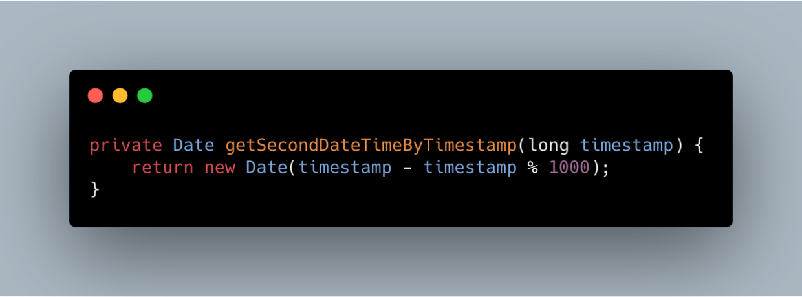

最近工作中遇到两例mysql时间戳相关的问题，一个是mysql-connector-java和msyql的精度不一致导致数据查不到；另一例是应用服务器时区错误导致数据查询不到。通过这篇文章，希望能够解答关于mysql中时间戳的几个问题：
前段时间，将负责的应用的mysql-connector-java的版本从5.1.16升级到5.1.30，在做功能回归的时候发现，使用了类似上面的SQL的用例的运行时数据会有遗漏，导致功能有问题。
考虑到我负责的应用中，有个功能需要用到类似下面这种SQL，即使用时间戳作为查询的条件，查询在某个时间戳之后的所有数据。
经过排查发现：mysql-connector-java在5.1.23之前会将秒后面的精度丢弃再传给MySQL服务端，正好我们使用的mysql版本中DATETIME的精度是秒；在我将mysql-connector-java升级到5.1.30后，从java应用通过mysql-connector-java将时间戳传到MySQL服务端的时候，就不会将毫秒数丢弃了，从mysql-connector-java的角度看是修复了一个BUG，但是对于我的应用来说却是触发了一个BUG。
如果你面对这个问题，你会怎么修复呢？
我们当时想了三种方案：
在传入Mapper接口之前，将传入的时间戳按秒取正，代码如下
在查询之前，将传入的时间戳减1秒；
经过验证，方案1会，java.util.Date转过去的java.sql.Date对象会将日期之后的精度全部丢掉，从而导致查询出更多不必要的数据；方案3是可以的，就是可能会查出多一两条数据；方案2也是可以的，相当于从代码上对mysql-connector-java的特性做了补偿。最终我选择的是方案2。
利用homebrew安装MySQL，版本是8.0.15，装好后建一个表，用来存放用户信息，SQL如下：
使用spirngboot + mybatis作为开发框架，定义一个用户实体，代码如下所示：
定义该实体对应的Mapper，代码如下：
设置连接mysql相关的配置，代码如下：
编写测试代码，先插入一条数据，然后用时间戳作为查询条件去查询，代码如下：
运行单测，如我们的设想，确实是没有查询出数据来，结果如下：
然后修改代码，利用上面的代码将查询的时间戳按秒取正，代码如下：
再次运行单测，如我们的设想，这次可以查询出数据来了。
不过，这里有个小插曲，我在最开始设计表的时候，使用的SQL语句是下面这样的，
聪明如你一定发现了，这里的datetime已经支持小数点后更小的时间精度了，最多支持6位即最多可以支持到微妙级别。这个特性是什么时候引入的呢，我去查阅了[MySQL的官方文档][9]，发现这个特性是在mysql 5.6.4之后开始支持的。
经过了前面的实际案例分析和案例复现，想必读者已经对mysql中DATETIME这个类型有了一定的认识，接下来跟我一起看下，我们从这个案例中可以总结出哪些经验。
本号（javaadu）专注于后端技术、JVM问题排查和优化、Java面试题、个人成长和自我管理等主题，为读者提供一线开发者的工作和成长经验，期待你能在这里有所收获。